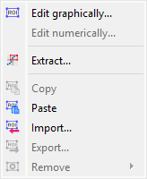
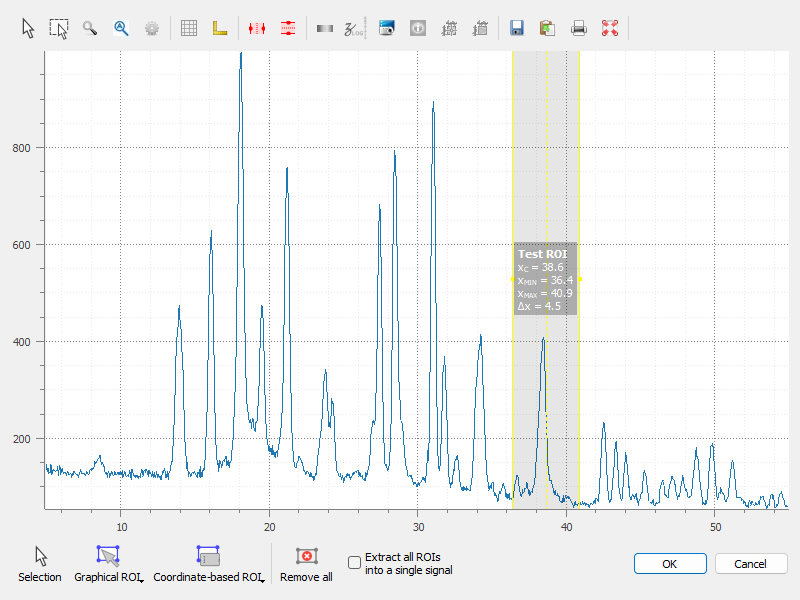
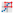
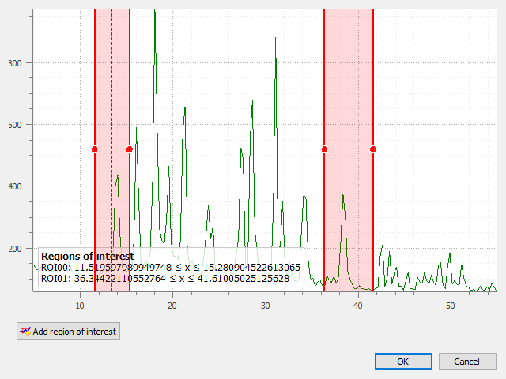

Regions Of Interest (ROI)#
This section describes how to manipulate Regions Of Interest (ROIs) for signals in DataLab.

Screenshot of the “ROI” menu.#
The “ROI” menu allows you to manage Regions Of Interest (ROIs) associated with the current signal.
See also
For more information about signal metadata, see the Manipulate metadata and annotations section.
The Regions Of Interest (ROI) are signal areas that are defined by the user to perform specific operations, processing, or analysis on them.
ROI are taken into account almost in all computing features in DataLab:
The “Operations” menu features are done only on the ROI if one is defined (except if the operation changes the number of points, like interpolation or resampling).
The “Processing” menu actions are performed only on the ROI if one is defined (except if the destination signal data type is different from the source’s, like in the Fourier analysis features).
The “Analysis” menu actions are done only on the ROI if one is defined.
Note
ROI are stored as metadata, and thus attached to signal.
The “ROI” menu allows you to:
“Edit graphically” : open a dialog box to manage ROI associated with the selected signal (add, remove, move, resize, etc.). The ROI definition dialog is exactly the same as ROI extraction (see below): the ROI is defined by moving the position and adjusting the width of an horizontal range.
{kind=link}

A signal with an ROI.#
“Edit numerically”: open a dialog box to edit the parameters of the selected ROIs numerically (i.e. using a simple form). This allows you to define or modify ROIs based on numerical values.
“Extract”

: extract the defined ROI from the selected signals. This will create a new signal for each ROI (or a single signal, if the “Extract all ROIs into a single signal” option is selected in the dialog), with the same metadata as the original signal, but with the data corresponding to the ROI only. The new signals will be added to the current workspace.“Copy” : copy the defined ROI from the selected signals to the clipboard. This allows you to paste the ROI into another signal or use it in other operations.
“Paste”
 : paste the copied ROI from the clipboard to the selected signals. This will add the ROI to the signals, allowing you to define or modify ROIs based on previously copied ones.
: paste the copied ROI from the clipboard to the selected signals. This will add the ROI to the signals, allowing you to define or modify ROIs based on previously copied ones.“Import” : import ROIs from a file. This allows you to load previously saved ROIs into the current signal.
“Export” : export the defined ROIs to a file. This allows you to save the ROIs for later use or to share them with others.
“Remove all”
 : remove all defined ROI for the selected signals.
: remove all defined ROI for the selected signals.
{kind=link}
{kind=link}
{kind=link}
{kind=link}

ROI extraction dialog: the ROI is defined by moving the position and adjusting the width of an horizontal range.#